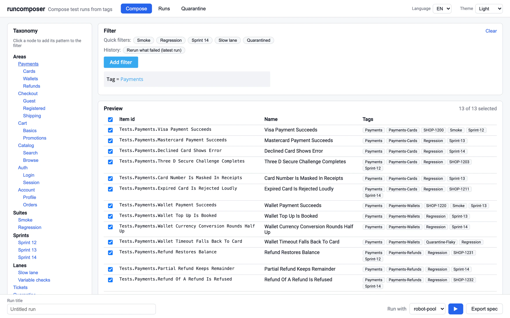

Die Schnittstelle ist ein Dokument, kein Protokoll.
Ein tag-basierter Composer und Orchestrator für Testläufe. Betrachte deinen Testkorpus durch eine kuratierte Taxonomie, stell mit einer echten Filtersprache eine präzise Auswahl zusammen und friere sie zu einer portablen Run Spec ein — einem versionierten Dokument, das beliebige Ausführende abarbeiten können: ein lokaler Process Pool, dein eigener Agent auf einer entfernten Maschine oder ein CI-Job. Ergebnisse laufen über jeden Transportweg zurück in eine Lauf-Historie, aus der die nächste Auswahl entsteht.
# boots a fictional web-shop corpus and runs the whole loop
pipx run --spec . runcomposer demo
robotframework.Jeder Testkorpus ab einer gewissen Größe hat dasselbe Problem: Du kannst alles ausführen oder eine einzelne Sache, aber genau die richtige Teilmenge auszuführen — und später belegen zu können, welche Teilmenge das war — ist umständlich. Tags helfen, bis die Tag-Abfrage in einem Parameter eines CI-Jobs steckt, den drei Wochen später niemand mehr rekonstruieren kann.
runcomposer teilt das Problem in zwei Hälften. Das Zusammenstellen der Auswahl ist ein vollwertiger, überprüfbarer Vorgang, der ein Dokument hervorbringt. Das Ausführen ist die Aufgabe anderer — und zwar mit Absicht. Das Dokument ist die gesamte Schnittstelle: Wer ausführt, muss drei Felder verstehen, keine API.
Was es nicht ist: ein CI-System, ein Scheduler oder ein Test-Framework. Es gibt keinen Cron, keine instanzübergreifende Queue und keinen Anspruch, das abzulösen, was deine Builds heute schon ausführt. Zusammenstellen, dispatchen, einlesen, durchsehen — das ist das ganze Produkt.
Derselbe Gedankengang wie auf dem Rest dieser Seite, nur ausgeführt: wie umständlich präzises Auswählen ist, was sich ändert, sobald die Auswahl zu einem Dokument wird, und wohin dieses Dokument danach reisen kann.
69 Sekunden, mit Sprecher
Viereinhalb Minuten über die Schulter geschaut, in der echten Oberfläche: die Tests für heute Nacht Bereich für Bereich zusammensuchen, die bekannt kaputten liegen lassen, zusehen, wie die Verdicts einzeln eintreffen, bis der Lauf sich abgeschlossen meldet — und am nächsten Morgen den einen fehlgeschlagenen Test erneut ausführen. Eine Erklärung dazu, wie es darunter funktioniert, genau an der Stelle, an der die Geschichte sie braucht.
4 Minuten 36 Sekunden, mit Sprecher · Untertitel
Sechs Schritte, und der Lebenszyklus-Status des Laufs wird bei jedem einzelnen berechnet — nie geraten.
Eine Test Source zählt deine Tests als Items auf — eine opake, stabile Id samt Tags — und bildet einen Hash über den Inhalt des Katalogs. Eine Robot-Framework-Source prägt Ids aus Longnames; eine Manifest-Source nimmt eine schlichte JSON-Liste entgegen, sodass ein pytest-Korpus als Node-Ids ankommt.
Navigiere durch die
Taxonomie
— einen kuratierten Baum über Tag-Mustern, Daten statt Code —, baue einen Filter und sieh
zu, wie die Vorschau neu kompiliert wird, während du tippst. Die Filtersprache
ist klein und verlustfrei: ein bloßes Wort ist ein wörtlicher Tag, prefix:Checkout-
ist syntaktischer Zucker für einen verankerten Regex, regex: ist der
Notausgang, und die drei Operatoren sind AND, OR, NOT.
Der Filter wird gegen den Katalog-Snapshot kompiliert, und die daraus entstehende Item-Liste wird in das Dokument geschrieben. Das ist der Schritt, der einen Lauf reproduzierbar macht: Der Filter bleibt zur Nachvollziehbarkeit erhalten, ausgeführt wird aber die eingebettete Liste.
Übergib das Dokument an einen Runner, oder exportiere es und gib es an was auch immer weiter. Jede Übergabe prägt einen Dispatch; dieselbe Spec erneut auszuführen ist ein neuer Dispatch unter demselben Lauf.
Ergebnisse kommen als Bundle zurück, das einen Korrelations-Marker trägt. Schieb es per HTTP, leg es in ein überwachtes Verzeichnis, oder übergib es auf der Kommandozeile. Über jede Zustellung wird ein Hash ihres Inhalts gebildet.
Sobald jeder deklarierte Shard geliefert hat, ist der Lauf abgeschlossen, und seine Verdicts werden zur Historie — und genau dort beginnt die nächste Auswahl.
Versioniertes YAML, isomorph zu JSON und in beiden Formen akzeptiert, mit veröffentlichtem
JSON Schema. Die
Kernabschnitte sind generisch und geschlossen. Genau ein Abschnitt ist offen —
runner — und der Kern schaut nie hinein.
runspec: "1.0"
run:
id: "01JZ9GQ2W8KJ3F6M4P5R7T9V" # minted at compose time; the correlation key
title: "Payments regression without quarantined tests"
created_at: "2026-07-06T09:14:03Z"
labels: # free-form provenance; stored, never interpreted
requested_by: "alex"
selection:
tag_filter: # kept for provenance — not re-compiled by executors
op: AND
items:
- op: OR
items: ["Payments", "prefix:Checkout-", "regex:^Cart(V2)?$"]
- not: "prefix:Quarantine-"
materialized: # THE authoritative executed set
item_ids: ["Tests.Payments.Visa Payment Succeeds", "Tests.Payments.Declined Card Shows Error", …]
count: 33
source:
provider: "robotframework" # this source mints ids from Robot longnames
snapshot: "sha256:21ee74fed1fcf5e6…" # integrity check — drift is detectable
results:
expect: [{ format: "robot-output-xml" }]
deliver: "api"
token: "rct_…" # per-run ingest token
runner: # the ONE open section — plugin's own vocabulary
robot-pool:
suite_root: "tests/"
partitions: ["env1", "env2"]
variables: { STAGE: "test" }Weil die Item-Liste im Dokument selbst mitreist, ist eine dispatchte Spec autark. Die Maschine, die sie ausführt, braucht keinen Zugriff auf deinen Katalog, deine Datenbank oder dein Netz. Und weil der Katalog-Snapshot mitreist, kann ein Ausführender erkennen, ob sich der Korpus unter dem Plan hinweg bewegt hat.
Ein Consumer muss jede Spec derselben Major-Version akzeptieren: Unbekannte Felder
innerhalb bekannter Abschnitte werden ignoriert, unbekannte Abschnitte auf oberster Ebene
erzeugen eine Warnung, eine höhere Major-Version wird rundheraus abgelehnt.
runcomposer validate prüft ein Dokument gegen das Schema; mit
--for-dispatch verlangt es zusätzlich alles, was die Ausführung braucht.
Das ist der Teil, den zu verstehen sich lohnt, denn genau ihn zu ermöglichen ist der Zweck des ganzen Entwurfs. runcomposer muss deine Testmaschinen nicht erreichen. Es braucht dort keine Zugangsdaten, keine Netzwerkroute dorthin und keinen Agenten unter seiner Kontrolle. Es gibt ein Dokument heraus; irgendetwas auf der anderen Seite führt es aus und schickt ein Bundle zurück, wann immer es so weit ist.
runcomposer führt die Tests selbst auf einem Process Pool aus: Fan-out über Partitionen, laufzeitbalanciertes Chunking, live eintreffende Verdicts, während der Lauf noch läuft.
Eine einzige mitgelieferte Python-Datei auf der Gegenseite liest die Spec, führt deinen Befehl gegen genau die aufgeführten Ids aus und schreibt einen Korrelations-Marker neben die Ausgabe. Ein vollständiges Adopter-Kit fährt die Schleife von Anfang bis Ende.
Stößt einen bestehenden parametrisierten Job an und übergibt die Spec als Build-Parameter. Die Stage des Jobs führt denselben mitgelieferten Consumer aus und schickt das Bundle zurück — es gibt ein reproduzierbares Jenkins-in-Docker-Setup, das du selbst laufen lassen kannst.
Was auch immer die Spec ausführt — unser Runner, dein Skript, ein CI-Job, ein Kollege auf
einem Laptop —, schuldet genau drei Dinge. Alles andere im Dokument, einschließlich des
gesamten Abschnitts runner, darf ignoriert werden.
Der Consumer ist mit Absicht winzig: eine einzige, in sich geschlossene Python-Datei, die
nur die Standardbibliothek benutzt. Auf der ausführenden Seite ist nichts zu installieren —
kopier sie zu deinem Code, oder hol sie aus einem Release,
wo sie als eigenes Asset liegt. Die Datei liest die Spec als JSON, eine Maschine mit nichts als
python3 kann sie also ausführen.
# 1 — here: compose and freeze the plan
runcomposer spec 'Regression' --title "Nightly" \
--format json -o spec.json --export
# 2 — there: one vendored file, no install, your own runner command
python3 runcomposer_exec.py spec.json --out results \
--command "./run-tests.sh {ids_file} {out_dir}"
# → results/output.xml (whatever your tests produced)
# → results/runcomposer_run.json (run id + spec hash — the marker)
# 3 — here: the bundle comes back however you like, then
runcomposer ingest results
runcomposer runs
# RUN ID STATE RESULT
# 01JZ9GQ2W8KJ3F6M4P5R7T9V COMPLETE FAIL
Das „wie auch immer du willst“ aus Schritt 3 ist der eigentliche Punkt. Das Bundle ist ein
Verzeichnis. Committe es in einen Ergebnis-Branch, hol es per rsync, leg es
auf eine Freigabe, häng es an einen Build — der Marker darin trägt die Korrelation, der
Transport ist also deine Sache und keineswegs unsere.
Sicher wird das Ganze durch den Marker. Er trägt die Run-Id und einen Hash genau der Spec-Bytes, die herausgegeben wurden. Ein Bundle, dessen Hash nicht passt oder das sich auf einen Lauf beruft, den niemand dispatcht hat, rutscht nicht still in deine Historie — es landet in einer sichtbaren Quarantäne-Inbox, wo ein Mensch es zuordnen, übernehmen oder verwerfen kann.
Dispatch und Ergebnisrücklauf sind vollständig entkoppelt. Drei Transportwege münden in
eine Pipeline: ein HTTP-Push, abgesichert durch das eigene Ingest-Token des Laufs, ein
überwachtes File-Drop-Verzeichnis für Bundles, die per git oder über einen Air Gap gereist
sind, und schlicht runcomposer ingest auf der Kommandozeile.
Erneute Zustellung ist kein Sonderfall — Poller pollen erneut, CI wiederholt Webhooks, git zieht noch einmal. Deshalb sind die Regeln ausdrücklich: Ein Byte-gleiches Bundle ist ein No-op. Ein anderes Bundle für denselben Shard ersetzt die Verdicts dieses Shards, der letzte Schreiber gewinnt. Es gibt kein monotones Zusammenführen, denn eine Korrektur muss ein FAIL wieder in ein PASS verwandeln können.
Verdicts je Item sind PASS FAIL SKIP ERROR, jedes mit Dauer, Meldung, Artefakten und einem Versuchszähler — so lässt sich ein Retry innerhalb eines Laufs abbilden, und Flakiness ist ableitbar, statt als Vermutung gespeichert zu werden.
Sobald sich Läufe ansammeln, wird die Historie selbst zur Auswahlquelle. Frag nach den Fehlschlägen des letzten abgeschlossenen Laufs, und sie werden beim Zusammenstellen zu einer ganz normalen, statischen, reproduzierbaren Spec aufgelöst — mit einem Nachweis, wie die Liste zustande gekommen ist.
$ runcomposer spec --from-history 'failed@latest' --title "Rerun"
selection:
item_ids: ["Tests.Payments.Expired Card Is Rejected Loudly"]
derived_from:
- provider: "history"
query: { run: LATEST, verdicts: [FAIL] }
resolved_run_id: "01JZ8ZZ…"„Letzter“ heißt letzter abgeschlossener — ein Lauf, der noch auf Ergebnisse wartet, gilt nicht stillschweigend als Antwort. Und in einer frischen Installation sind diese Funktionen schlicht dunkel, was das Werkzeug ausspricht, statt eine selbstbewusst leere Liste zurückzugeben.
Der Kern kennt Items, Tags, Auswahlen, Specs, Läufe und Verdicts. Von Robot Framework,
pytest, Jenkins oder XML weiß er nichts. Das lebt in Plugins, geladen entweder über einen
Entry Point oder über einen schlichten module:-Pfad in deiner Konfiguration —
keine Umgebungsvariablen, kein magisches Aufspüren.
| Plugin | Art | Was es tut |
|---|---|---|
| manifestsource | Test Source | Ein JSON- oder YAML-Katalog, der nur id und tags
braucht. Der Einstiegsweg ohne jede Abhängigkeit; bringt ein
pytest-Beispiel
mit, das Node-Ids benutzt. |
| robotframeworksource | Test Source | Geht .robot-Dateien durch, prägt Ids aus Longnames und übernimmt
jede Eigenheit der Namensnormalisierung, damit der Kern das nie tun muss. Vorgeführt
an der
robot-shop-Suite. |
| robot-poolrunner | Runner | Ausführung im eigenen Prozess: Process Pool, Fan-out über Partitionen, laufzeitbalanciertes Chunking, live eintreffende Verdicts, Pre-Run-Hooks, deine eigenen Listener. |
| ci-triggerrunner | Runner | Steuert einen bestehenden parametrisierten CI-Job. Der Abschluss trifft per Webhook ein, oder er wird über die Build-API gepollt, wenn ein System nicht nach außen rufen kann. |
| robot-output-xmlparser | Result Parser | Robots output.xml → Verdicts. Entschärft: Dokumente mit Entity- oder
DTD-Deklarationen werden rundheraus abgelehnt. |
| junit-xmlparser | Result Parser | Die Lingua franca — pytest und so ziemlich alles andere, was berichtet. |
| sqlitestore | Run Store | Persistenz ohne Einrichtung für Läufe, Specs, Dispatches, Zustellungen und Verdicts. |
Die Grenze wird erzwungen, nicht bloß beabsichtigt: Ein Wächtertest lässt den Build scheitern, sobald Kern-Code auch nur das Vokabular eines Frameworks erwähnt. Native Ergebnisnamen laufen immer über die Source, der der Id-Raum gehört, sodass keine Eigenheit der Normalisierung nach innen sickern kann.
Selbst gehostet, eine einzige Konfigurationsdatei, sqlite als Voreinstellung. Die Web-UI liegt fertig gebaut im Wheel, auf Englisch und auf Deutsch, sodass zum Ausprobieren keine Node-Toolchain nötig ist.
git clone https://github.com/StochasticEntropy/runcomposer
cd runcomposer
# the guided demo — 60 tagged tests, a full compose → run → rerun loop,
# seeded into ./runcomposer-demo/ (rm -rf it to undo)
pipx run --spec . runcomposer demo
# the web UI and API on http://127.0.0.1:8100
pipx run --spec . runcomposer serve
# or in a container
docker build -t runcomposer . && docker run -p 8100:8100 runcomposer
# executing Robot Framework in-process needs one extra
pip install ".[robot]"
Es gibt noch kein veröffentlichtes Paket. runcomposer 0.1.0 wird aus einem Clone
installiert — davon geht jeder Befehl auf dieser Seite aus. Auf PyPI oder npm liegt nichts,
pip install runcomposer findet es also nicht; wann sich das ändert, siehst du
bei den Releases.
Die CLI ist das ganze Produkt ohne Browser. Alle elf Befehle:
demo startet die Beispielwelt, catalog listet den Korpus und
seinen Snapshot, compile zeigt eine Auswahl in der Vorschau,
spec stellt eine zusammen, validate prüft ein Dokument gegen das
Schema, dispatch führt es aus, ingest nimmt Ergebnisse zurück,
runs blättert darin, export reicht Ergebnisse an ein anderes
Werkzeug weiter, gc hält alles in Grenzen, und serve liefert
Web-UI und API.
ADOPTING.md führt Schritt für Schritt durch das Ausrichten auf deinen eigenen Korpus und deine eigenen Maschinen; DESIGN.md ist die Architektur und die Begründung hinter jeder Entscheidung, die hier zu sehen ist.
Alles oben Beschriebene liegt in einem einzigen öffentlichen Repository. Es ist ein junges Projekt mit einem einzigen Maintainer, deshalb ist der Issue-Tracker die Eingangstür für alles, was hier nicht hineinpasst.
ADOPTING.md — an deinen eigenen Korpus, deinen eigenen Runner und deine
eigenen Maschinen anschließen, eine Entscheidung nach der anderen.
DESIGN.md — die Architektur, die Grenzen und ein Entscheidungsprotokoll,
das festhält, was verworfen wurde und warum.
examples/ — die Robot-Suite, der pytest-Korpus, das Adopter-Kit für den
entfernten Agenten und eine vollständige Run Spec.
Wheel, sdist und die mitlieferbare Einzeldatei runcomposer_exec.py als
eigener Download.
Bugs, ein Korpus-Zuschnitt, der nicht passt, oder ein Plugin, das die Grenze erlauben sollte — dafür sind Issues da.
MIT. Benutzen, forken, ein Closed-Source-Plugin dagegen ausliefern — genau dafür ist die Plugin-Grenze da.